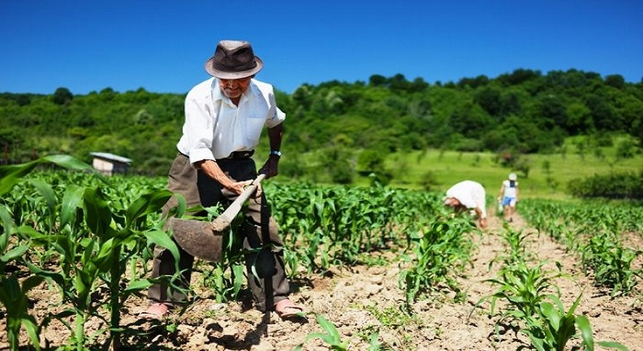
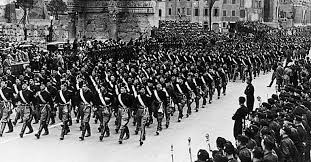
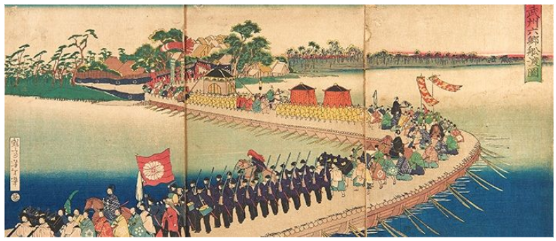

Sobre o Tema
O Agrinho 2025 nos convida a pensar como o campo e a cidade podem caminhar juntos pela sustentabilidade.
Por que é importante?
Preservar a natureza, apoiar o agricultor e educar com consciência são passos para o futuro.
Ações Sustentáveis
- Hortas escolares e comunitárias
- Economia de água e energia
- Reciclagem e reaproveitamento
- Consumo consciente
Contato
Escola Municipal do Futuro
Email: contato@escola.com
Telefone: (42) 1234-5678